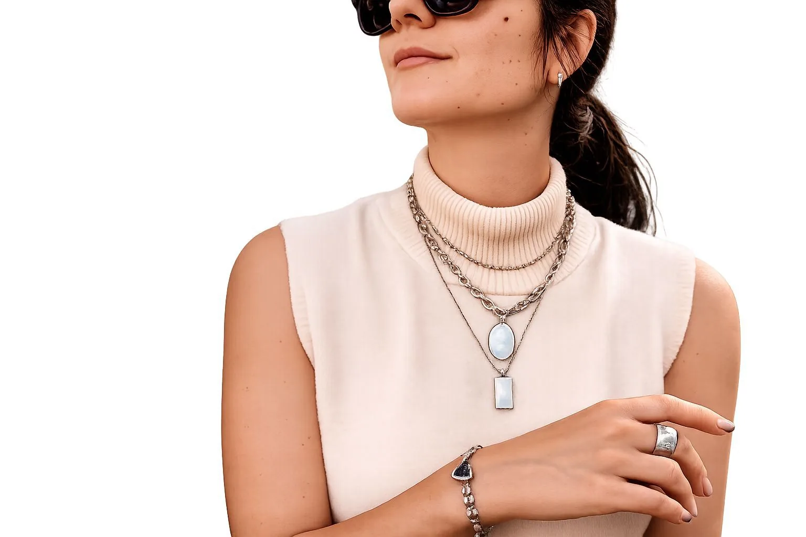
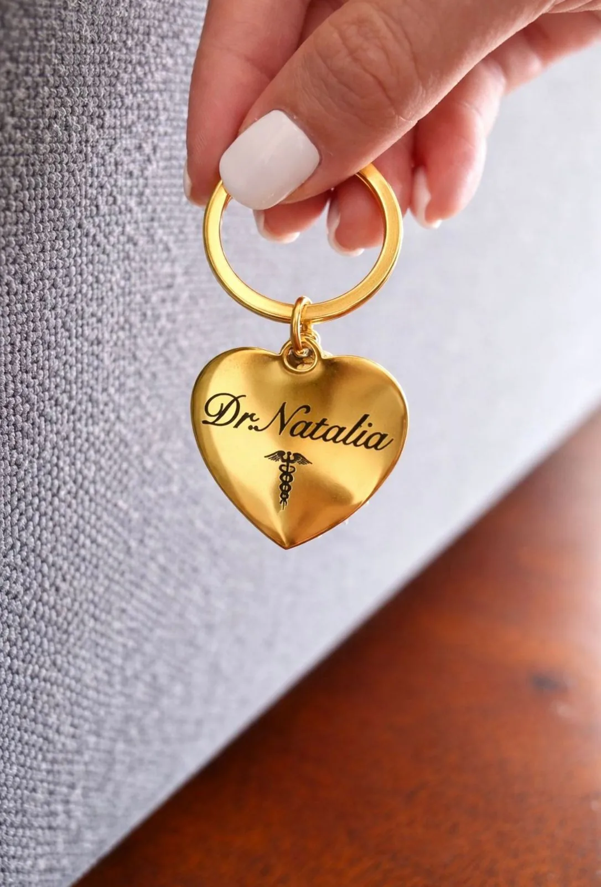

01
servicio o colección, sin SKU
Joyería de la colección Rose
Colección publicada de joyería; la composición se debe confirmar para cada pieza.

Imagen publicada por Rose JoyeríaJoyería y grabados personalizados: prepara el texto, revísalo y llévalo a una conversación con Rose.
Guarda tus referencias en una lista local y prepara el siguiente paso. Precios, variantes y existencias se revisan en cada ficha oficial.
Colección publicada de joyería; la composición se debe confirmar para cada pieza.

Servicio de grabado con nombres, fechas o frases según la pieza elegida.
Ofrece joyería, grabados personalizados y tienda en línea; sus preguntas frecuentes describen pedidos por carrito, venta mayorista y visitas con cita.
Prueba cantidades y condiciones. Obtén un resumen local para revisar antes de hablar con la empresa.
Datos revisados el 3 de noviembre de 2026. La empresa confirma cualquier condición vigente.
Colección publicada de joyería; la composición se debe confirmar para cada pieza.
Servicio de grabado con nombres, fechas o frases según la pieza elegida.
Sus preguntas frecuentes describen una empresa familiar en Naranjo, Alajuela.
La web indica elegir piezas en la tienda y avanzar con el carrito.
Las preguntas frecuentes indican que se pueden solicitar opciones de mayoreo.
La página de preguntas frecuentes indica coordinar una cita.
Su FAQ publica envíos por Correos de Costa Rica o encomienda.
La web menciona acero inoxidable y piezas bañadas en oro; confirmar composición de la referencia elegida.